| (1) |
| 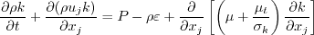 | (2) |
| 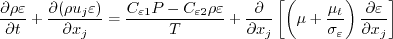 | (3) |
| 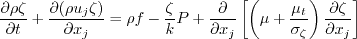 | (4) |
| 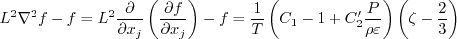 | (5) |
| 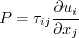 | (6) |
| 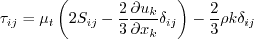 | (7) |
| (8) |
| 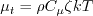 | (9) |
| 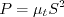 | (10) |
| (11) |
| 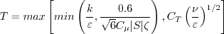 | (12) |
| 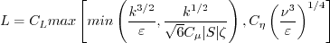 | (13) |
| (14) |
| 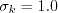 | (15) |
| 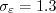 | (16) |
| 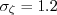 | (17) |
| (18) |
| (19) |
| 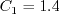 | (20) |
| 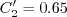 | (21) |
| 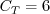 | (22) |
| (23) |
| 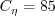 | (24) |
| 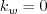 | (25) |
| 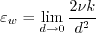 | (26) |
| 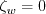 | (27) |
| 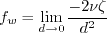 | (28) |
| 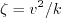 | (29) |
| (30) |
| 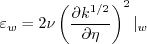 | (31) |
| (32) |
| 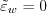 | (33) |
| 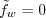 | (34) |
| 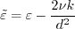 | (35) |
| 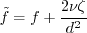 | (36) |
| 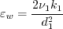 | (37) |
| 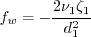 | (38) |